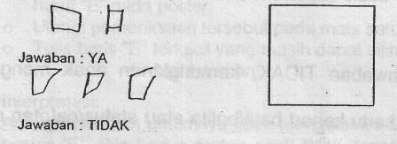

Kuesioner Praskrining untuk Anak 72 bulan
- Jangan menunjuk, membantu atau membetulkan, katakan pada anak :
- Suruh anak melompat dengan satu kaki beberapa kali tanpa berpegangan (lompatan dengan dua kaki tidak ikut dinilai). Apakah ia dapat melompat 2-3 kali dengan satu kaki?
- Dapatkah anak sepenuhnya berpakaian sendiri tanpa bantuan?
- Suruh anak menggambar di tempat kosong yang tersedia. Katakan padanya: "Buatlah gambar orang". Jangan memberi perintah lebih dari itu. Jangan bertanya/ mengingatkan anak bila ada bagian yang belum tergambar. Dalam memberi nilai, hitunglah berapa bagian tubuh yang tergambar. Untuk bagian tubuh yang berpasangan seperti mata, telinga, lengan dan kaki, setiap pasang dinilai satu bagian. Dapatkah anak menggambar sedikitnya 3 bagian tubuh?
- Pada gambar orang yang dibuat pads nomor 7, dapatkah anak menggambar sedikitnya 6 bagian tubuh?
- Tulis apa yang dikatakan anak pada kalimat-kalimat yang belum selesai ini, jangan membantu kecuali mengulang pertanyaan: "Jika kuda besar maka tikus "Jika api panas maka es "Jika ibu seorang wanita maka ayah seorang Apakah anak menjawab dengan benar (tikus kecil, es dingin, ayah seorang pria) ?
- Apakah anak dapat menangkap bola kecil sebesar bola tenis/bola kasti hanya dengan menggunakan kedua tangannya? (Bola besar tidak ikut dinilai).
- Suruh anak berdiri satu kaki tanpa berpegangan. Jika perlu tunjukkan caranya clan beri anak ands kesempatan melakukannya 3 kali. Dapatkah ia mempertahankan keseimbangan dalam waktu 11 detik atau lebih?
- Jangan membantu anak clan jangan memberitahu nama gambar ini, Suruh anak menggambar seperti contoh ini di kertas kosong yang tersedia- Berikan 3 kali kesempatan. Apakah anak dapat menggambar seperti contoh ini?
- lsi titik-titik di bawah ini dengan jawaban anak. Jangan membantu kecuali mengulangi pertanyaan sampai 3 kali bila anak menanyakannya. "Sendok dibuat dari apa?" "Sepatu dibuat dari apa?" "Pintu dibuat dari apa?" Apakah anak dapat menjawab ke 3 pertanyaan di atas dengan benar? Sendok dibuat dari besi, baja, plastik, kayu. Sepatu dibuat dari kulit, karet, kain, plastik, kayu. Pintu dibuat dari kayu, besi, kaca.

“Tunjukkan segi empat merah” “Tunjukkan segi empat kuning” “Tunjukkan segi empat biru” “Tunjukkan segi empat hijau” Dapatkah anak menunjuk keempat warna itu dengan benar?
